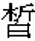

做梦，是自由的，说梦，就不自由。做梦，是做真梦的，说梦，就难免说谎。
大年初一，就得到一本《东方杂志》新年特大号，临末有“新年的梦想”，[117]问的是“梦想中的未来中国”和“个人生活”，答的有一百四十多人。记者的苦心，我是明白的，想必以为言论不自由，不如来说梦，而且与其说所谓真话之假，不如来谈谈梦话之真，我高兴的翻了一下，知道记者先生却大大的失败了。
当我还未得到这本特大号之前，就遇到过一位投稿者，他比我先看见印本，自说他的答案已被资本家删改了，他所说的梦其实并不如此。这可见资本家虽然还没法禁止人们做梦，而说了出来，倘为权力所及，却要干涉的，决不给你自由。这一点，已是记者的大失败。
但我们且不去管这改梦案子，只来看写着的梦境罢，诚如记者所说，来答复的几乎全部是智识分子。首先，是谁也觉得生活不安定，其次，是许多人梦想着将来的好社会，“各尽所能”呀，“大同世界”呀，很有些“越轨”气息了（末三句是我添的，记者并没有说）。
但他后来就有点“痴”起来，他不知从那里拾来了一种学说，将一百多个梦分为两大类，说那些梦想好社会的都是“载道”之梦，是“异端”，正宗的梦应该是“言志”的，硬把“志”弄成一个空洞无物的东西。[118]然而，孔子曰，“盍各言尔志”，而终于赞成曾点者，[119]就因为其“志”合于孔子之“道”的缘故也。
其实是记者的所以为“载道”的梦，那里面少得很。文章是醒着的时候写的，问题又近于“心理测验”，遂致对答者不能不做出各各适宜于目下自己的职业，地位，身分的梦来（已被删改者自然不在此例），即使看去好像怎样“载道”，但为将来的好社会“宣传”的意思，是没有的。所以，虽然梦“大家有饭吃”者有人，梦“无阶级社会”者有人，梦“大同世界”者有人，而很少有人梦见建设这样社会以前的阶级斗争，白色恐怖，轰炸，虐杀，鼻子里灌辣椒水，电刑……倘不梦见这些，好社会是不会来的，无论怎么写得光明，终究是一个梦，空头的梦，说了出来，也无非教人都进这空头的梦境里面去。
然而要实现这“梦”境的人们是有的，他们不是说，而是做，梦着将来，而致力于达到这一种将来的现在。因为有这事实，这才使许多智识分子不能不说好像“载道”的梦，但其实并非“载道”，乃是给“道”载了一下，倘要简洁，应该说是“道载”的。
为什么会给“道载”呢？曰：为目前和将来的吃饭问题而已。
我们还受着旧思想的束缚，一说到吃，就觉得近乎鄙俗。但我是毫没有轻视对答者诸公的意思的。《东方杂志》记者在《读后感》里，也曾引佛洛伊特[120]的意见，以为“正宗”的梦，是“表现各人的心底的秘密而不带着社会作用的”。但佛洛伊特以被压抑为梦的根柢——人为什么被压抑的呢？这就和社会制度，习惯之类连结了起来，单是做梦不打紧，一说，一问，一分析，可就不妥当了。记者没有想到这一层，于是就一头撞在资本家的朱笔上。但引“压抑说”来释梦，我想，大家必已经不以为忤了罢。
不过，佛洛伊特恐怕是有几文钱，吃得饱饱的罢，所以没有感到吃饭之难，只注意于性欲。有许多人正和他在同一境遇上，就也轰然的拍起手来。诚然，他也告诉过我们，女儿多爱父亲，儿子多爱母亲，即因为异性的缘故。然而婴孩出生不多久，无论男女，就尖起嘴唇，将头转来转去。莫非它想和异性接吻么？不，谁都知道：是要吃东西！
食欲的根柢，实在比性欲还要深，在目下开口爱人，闭口情书，并不以为肉麻的时候，我们也大可以不必讳言要吃饭。因为是醒着做的梦，所以不免有些不真，因为题目究竟是“梦想”，而且如记者先生所说，我们是“物质的需要远过于精神的追求”了，所以乘着Censors[121]（也引用佛洛伊特语）的监护好像解除了之际，便公开了一部分。其实也是在“梦中贴标语，喊口号”，不过不是积极的罢了，而且有些也许倒和表面的“标语”正相反。
时代是这么变化，饭碗是这样艰难，想想现在和将来，有些人也只能如此说梦，同是小资产阶级（虽然也有人定我为“封建余孽”或“土著资产阶级”，但我自己姑且定为属于这阶级），很能够彼此心照，然而也无须秘而不宣的。
至于另有些梦为隐士，梦为渔樵，和本相全不相同的名人[122]，其实也只是豫感饭碗之脆，而却想将吃饭范围扩大起来，从朝廷而至园林，由洋场及于山泽，比上面说过的那些志向要大得远，不过这里不来多说了。
一月一日。
注 释
[116] 本篇最初发表于1933年4月15日北平《文学杂志》第一号。
[117] 《东方杂志》 综合性刊物，1904年3月在上海创刊，1948年12月停刊，商务印书馆出版。它于1933年出的“新年特大号”（第三十卷第一期）中，辟有“新年的梦想”专栏。当时该刊的主编为胡愈之。
[118] 《东方杂志》记者在“新年的梦想”专栏的《读后感》中说：“近来有些批评家把文学分为‘载道’的文学和‘言志’的文学这两类。我们的‘梦’也可以同样的方法来分类：就是‘载道’的梦，和‘言志’的梦。”又说：“‘载道’的梦只是‘异端’，而‘言志’的梦才是梦的‘正宗’，因为我们相信‘梦’是个人的，而不是社会的。依据佛洛伊特的解释，梦只是白天受遏抑的意识，于睡眠，解放出来。……所以‘梦’只是代表了意识的‘不公开’的部分，在梦中说教，在梦中讲道，在梦中贴标语，喊口号，这到底是不常有的梦，至少这是白日梦而不是夜梦，所以不能算作梦的正宗。只有个人的梦，表现各人心底的秘密而不带着社会作用的，那才是正宗的梦。”按《东方杂志》记者所说的“近来有些批评家”指周作人，他在《中国新文学的源流》一书中，认为中国文学史是“载道”文学和“言志”文学的消长史。
[119] “盍各言尔志” 语出《论语·公冶长》：“颜渊、季路侍。子曰：‘盍各言尔志。’”孔子赞成曾点的话，见《论语·先进》：“子路、曾

（名点）、冉有、公西华侍坐。……子曰：‘何伤乎，亦各言其志也。’（曾点）曰：‘莫（暮）春者，春服既成，冠者五六人，童子六七人，浴乎沂，风乎舞雩，咏而归。’夫子喟然叹曰：‘吾与点也。’”[120] 佛洛伊特（S.Freud，1856—1939） 通译弗洛伊德，奥地利精神病学家，精神分析学说的创立者。这种学说认为文学、艺术、哲学、宗教等一切精神现象，乃至常人的梦，精神病患者的症状，都是人们因受压抑而潜藏在下意识中的某种“生命力”（Libido），特别是性欲的潜力所产生的。他的主要著作有《梦的解释》、《日常生活的病理心理学》、《精神分析引论》、《精神分析引论新编》等。
[121] Censors英语，原义为检查官，弗洛伊德精神分析学说用以表示阻止“潜意识”进入“意识”的压抑力。
[122] 名人 指在《东方杂志》“新年特大号”上“说梦”的一些国民党官员，如当时的铁道部次长、抗日战争中做了汉奸的曾仲鸣说：“何处是修竹、吾庐三径”；中国银行副总裁俞寰澄说：“我只想做一个略具知识的自耕农，我最酷爱田园生活”，等等。